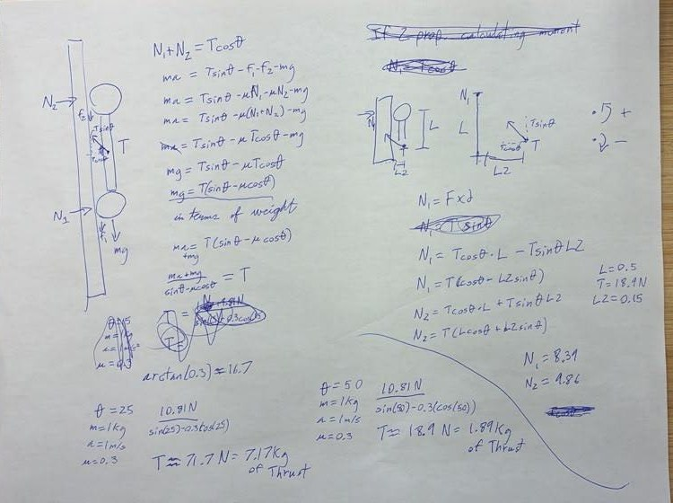

Approach
Frameworks and Algorithms
The Isaac Sim reinforcement workflow we're going to use is RSL-RL. This is because RSL-RL is purpose built for robotics reinforcement learning rather than general reinforcement learning.
We would use a single agent rather than multiple agents because our robot flipping onto a wall is a single agent problem. This is because we only have one robot.
We want to use the teacher-student method because the teacher provides a lot of extra information during simulation that we wouldn't have otherwise.
Hand Calcs
We've already started to model the force a little bit. This is just for the robot on the wall, but we would have to perform calculations for how it would get from the ground and then onto the wall as well.

Similar Project
VertiGo (ETH Zurich). We are planning to use a similar system mechanically (2 tilting thrusters and a similar floor to wall transition maneuver), but we want to use an RL policy instead of a hand designed and calculated controller.
Literature We Are Working On Processing
We are reading Learning Energy-Efficient Air–Ground Actuation for Hybrid Robots on Stair-Like Terrain, Learning Air-Ground Motion Control with Temporal Mode Switching and Cross-Terrain Tracking, the paper at arXiv:2103.03011, and Pegasus Simulator: An Isaac Sim Framework for Multiple Aerial Vehicles Simulation.